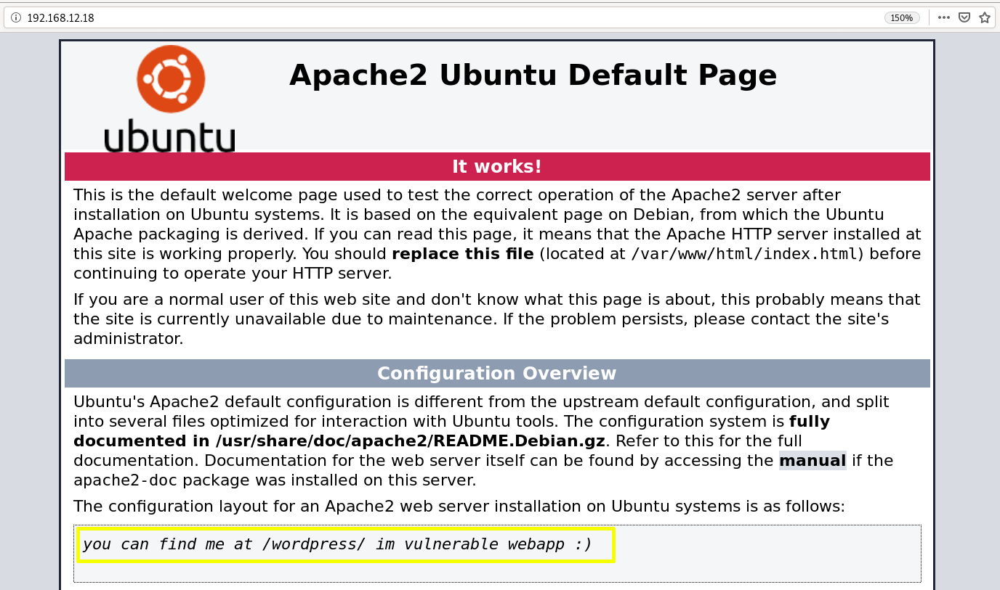

1. Visit the website
There's not much to see after visiting the webpage.

The apache webpage opens which is normal except for the fact that there was a comment saying “you can find me at /wordpress/ im vulnerable“.
Now according to this comment, it means there is a vulnerable directory called ‘WordPress’.  Index
Index